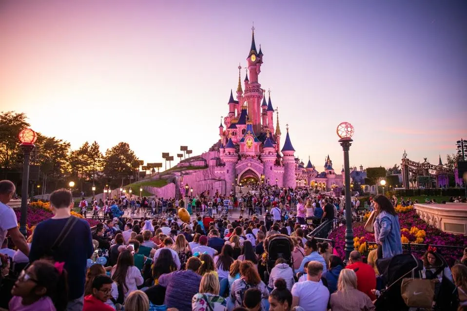
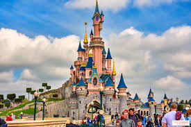
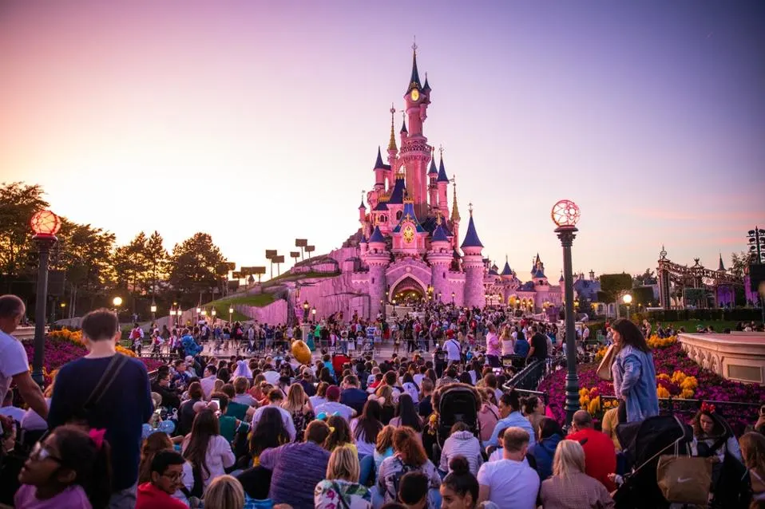
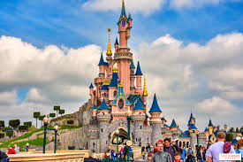

Disneyland
 



Planning and Opening of a Theme Park
In the late-1940s Walt travelled to Chicago, he drew sketches of his ideas for an amusement park where he imagined his employees spending time with their children. Disney visited a children`s theme park, called Children's Fairyland in Oakland, California, this is where his idea came. People often asked him to let their children visit Walt Disney Studios, but Walt considered that a functional movie studio had little to offer to visiting fans so he wanted to offer them something more. He started to visit other parks for inspiration and ideas, including Tivoli Gardens in Denmark, Efteling in the Netherlands and Greenfield Village, Playland, and Children's Fairyland in the United States. At first, he imagined a small park, across the street, next to the studio, but it seemed to be a good idea, and worth a bigger investment, a huge centre, named Disneyland. Walt asked proficient help for his project and bought a 65 ha site near Anaheim in 1953. Once the thematic framework is established, the design process kicks into high gear. Every aspect of the park, from the layout of the lands to the architecture of the buildings, is carefully considered to evoke a sense of wonder and immersion. Attention is paid to sightlines, flow of foot traffic, and the integration of storytelling elements into the physical environment. The construction began in 1954. Simultaneously, teams work on the logistical aspects of opening the park. This includes infrastructure development, such as transportation systems and utilities, as well as staffing and operational planning. Disneyland is not just a theme park; it's a small city with its own ecosystem of employees, vendors, and service providers. As opening day approaches, anticipation mounts. Months, if not years, of planning culminate in a flurry of activity as the finishing touches are applied to the park. Attractions are tested, costumes are tailored, and final inspections are conducted to ensure everything meets Disney's exacting standards. Finally, the big day arrives: opening day. It's a momentous occasion filled with excitement and nervous energy. Disneyland was finally opened on Sunday, July 17, 1955, with thousands of people attending the occasion. Walter Disney gave the following dedication day speech:”To all who come to this happy place; welcome. Disneyland is your land. Here age relives fond memories of the past .... and here youth may savor the challenge and promise of the future. Disneyland is dedicated to the ideals, the dreams and the hard facts that have created America ... with the hope that it will be a source of joy and inspiration to the entire world.” Disneyland turned to be a huge success and it has undergone a number of expansions and renovations adding different attractions like New Orleans Square in 1966, Bear Country in 1972, and Mickey's Toontown in 1993. As the clock strikes opening time, the gates swing open, and the park comes to life with a burst of color, music, and laughter.